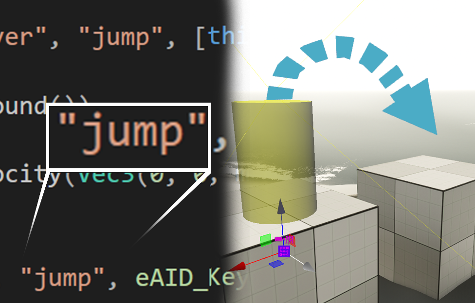
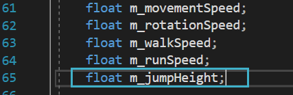
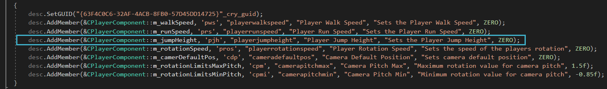
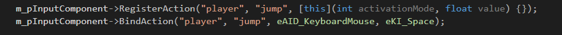
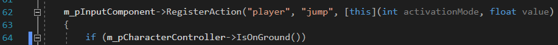
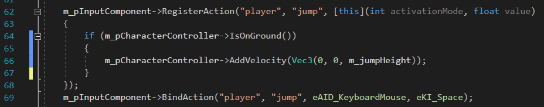
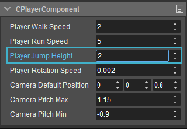
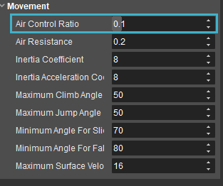

Overview
In this tutorial, we will be adding the "jumping" functionality to the player character that was built in the first part of this series (Creating a Player using C++).

Prerequisites
- CRYENGINE 5.7 LTS
- Visual Studio (2017, 2019 or 2020 work just fine) or any other IDE or code editor of your choice
Adding Jumping
Adding a Member Variable
Open Game.sln, which can be found within the solution folder of your project's main directory.

The location of the Game.sln file in the solutions folder
If you have not generated a solution yet, or are unsure about the location of the Game.sln file, follow the first steps of the Creating a Player using C++ tutorial.
- Go to the
privateclass within Player.h and add afloatmember variable with the name "m_jumpHeight":
The float variable for the character's jump height
Jump "height” technically represents more of a jump “force”. For example, if the gravity in your level is set to something like Moon’s gravity, jump “height” might not be applicable, as the height value would then be quite different compared to Earth. This level is set to standard Earth gravity, so jump "height" will suffice.
In the
publicclass of Player.h, create a newAddMemberline so that you can modify thejumpHeightdesc.AddMember(&CPlayerComponent::m_jumpHeight, 'pjh', "playerjumpheight", "Player Jump Height", "Sets the Player Jump Height", ZERO);
The AddMember line which generates the Player Jump Height property
Adding an Input
Next, you need to define which input will be used for jumping, and how it is used.
Under
InitializeInputwithin Player.cpp, copy and paste an existingRegisterActionandBindActionline and modify it so that you have a uniqueeKI(Space) and name for the jump action:m_pInputComponent->RegisterAction("player", "jump", [this](int activationMode, float value) {}); m_pInputComponent->BindAction("player", "jump", eAID_KeyboardMouse, eKI_Space);
Defining the eKI and name for the jump actionTo avoid being able to theoretically spam your jump action input and fly into space, you will first want to check if the player is on the ground, then apply the jumping velocity.
IsOnGroundis part of thepCharacterControllerand does exactly that; check to see if the player is on the ground:Move the empty curly brackets below the RegisterAction line and add in the following
ifstatement:if (m_pCharacterController->IsOnGround())
The if statement to check whether the player is on the ground prior to jumping
Even if the jumping action key (Space) is pressed, and the player is indeed on the ground, you are still missing the logic that will modify the velocity which equates to the character's jump.
Add the following line below the previous
ifstatement:{ m_pCharacterController->AddVelocity(Vec3(0, 0, m_jumpHeight)); }This line adds upward velocity via
AddVelocityapplied toVec3(in this case, only the Z axis) such that when we modify thejumpHeightvalue in CRYENGINE, it will apply the given value to the Z axis.
The final input lines
Press Ctrl + Shift + S to save all tabs and build the solution. Once built, launch it in CRYENGINE 5.7 LTS.
Testing the Character
Once the solution is built, you can test your player character in the Sandbox Editor.
Open the level you created in the Creating a Player using C++ tutorial, and select the previously placed Player Entity.
If you don’t have the Player Entity still placed, drag an Empty Entity into the scene and add a CPlayerComponent to it.
- With the Player Entity selected, open the Properties panel and scroll down to the CPlayerComponent properties, where you should be able to configure the Player Jump Height.

Player Jump Height in the Entity Component properties
Generally, a "realistic" jump height will fall somewhere between 2-5, but be sure to play around with setting the value much higher to get an idea of how your game should play.
- Another value you can change is the Air Control Ratio, which is available by default in the CPlayerComponent properties. This will set how much you are able to control your player using the existing WASD key inputs while the character is still in the air.

The Air Control Ratio property
Setting the Air Control Ratio to 0 will make it so that you cannot control your player at all once the character leaves the ground, whereas a value as low as 0.1 can achieve some smooth and subtle results where the player can fine-tune their position in mid-air. With these variables set for your Player Entity’s CPlayerComponent properties, you can now press Ctrl + G and test out your character.
Conclusion
This concludes Part 3 of the Creating a Player using C++ tutorial. To learn more about C++ in CRYENGINE and/or other topics, please refer to the CRYENGINE V Manual.
Video Tutorial
You can also follow this tutorial series in video form on our YouTube channel:
Related Information
Tutorial - Creating a Player using C++
Tutorial - Coding in C++ - Creating a Player Controller - CRYENGINE Summer Academy